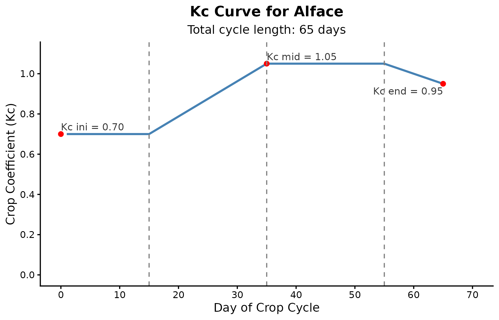

Curva de Kc e Balanço Hídrico Diário no Solo
João Batista Tolentino Jr.
Source:vignettes/balanco-hidrico.Rmd
balanco-hidrico.RmdIntrodução
O dimensionamento e o manejo da irrigação dependem da estimativa
precisa da demanda hídrica das culturas ao longo do seu ciclo fenológico
e do monitoramento da disponibilidade de água na zona radicular. O
pacote irritool implementa a metodologia do Boletim FAO-56
(Allen et al., 1998) por meio de duas funções integradas:
-
calc_kc_curve(): constrói a série diária do coeficiente de cultivo () e gera sua visualização gráfica dividida nos quatro estádios fenológicos (inicial, desenvolvimento, intermediário e final). -
calc_water_balance(): simula o balanço hídrico diário na zona das raízes, calculando o esgotamento de água no solo, o coeficiente de estresse hídrico (), a evapotranspiração real da cultura (), o excedente hídrico (percolação profunda/escoamento) e as lâminas de irrigação necessárias sob critérios de turno de rega fixo ou variável.
1. Construção da Curva de Coeficiente de Cultivo ()
De acordo com a metodologia FAO-56, a curva de é parametrizada por três valores de referência (, e ) e pelas durações, em dias, de cada estádio fenológico (, , e ).
Como exemplo prático, considere o cultivo da alface (Lactuca sativa) com ciclo total de 65 dias, distribuído em 15, 20, 20 e 10 dias para os respectivos estádios, e coeficientes , e :
kc_alface <- calc_kc_curve(
kc_points = c(0.70, 1.05, 0.95),
stage_lengths = c(15, 20, 20, 10),
crop = "Alface"
)
# Visualizar os primeiros registros da série diária
head(kc_alface$kc_data)
#> # A tibble: 6 × 2
#> day kc_value
#> <int> <dbl>
#> 1 1 0.7
#> 2 2 0.7
#> 3 3 0.7
#> 4 4 0.7
#> 5 5 0.7
#> 6 6 0.7O objeto retornado contém o vetor numérico ($kc_serie),
o tibble estruturado ($kc_data) e o gráfico em
ggplot2 ($kc_plot):
kc_alface$kc_plot
2. Simulação do Balanço Hídrico Diário
A série diária $kc_serie obtida anteriormente alimenta
diretamente a função calc_water_balance(). Para ilustrar a
simulação ao longo dos 65 dias do ciclo, geramos séries sintéticas de
evapotranspiração de referência
(,
em
)
e precipitação pluvial
():
set.seed(42)
n_dias <- length(kc_alface$kc_serie)
et0_diaria <- round(runif(n_dias, min = 2.5, max = 5.2), 1)
chuva_diaria <- rep(0, n_dias)
dias_chuva <- sample(seq_len(n_dias), size = 9)
chuva_diaria[dias_chuva] <- round(runif(9, min = 8, max = 38), 1)Cenário A: Turno de Rega Variável
(irrigation_rule = "threshold")
Neste critério, a irrigação é acionada automaticamente sempre que o esgotamento de água no solo ao final do dia ultrapassa a Água Facilmente Disponível ( ou ), repondo a umidade até a capacidade de campo ().
Parâmetros físico-hídricos adotados para o solo e cultura:
- Capacidade de campo ():
- Ponto de murcha permanente ():
- Profundidade efetiva do sistema radicular ():
- Fator de disponibilidade ():
bh_variavel <- calc_water_balance(
et0 = et0_diaria,
rainfall = chuva_diaria,
daily_kc_values = kc_alface$kc_serie,
root_depth = 300,
theta_fc = 0.32,
theta_wp = 0.16,
depletion_factor = 0.50,
initial_depletion = 0,
irrigation_rule = "threshold"
)
# Resumo das lâminas acumuladas no ciclo (mm)
bh_variavel$summary_depths
#> $total_rainfall
#> [1] 172.8
#>
#> $total_water_surplus
#> [1] 86.9735
#>
#> $net_rainfall
#> [1] 85.8265
#>
#> $total_etc
#> [1] 240.197
#>
#> $total_irrigation_applied
#> [1] 154.3705
#>
#> $irrigation_events_count
#> [1] 6A tabela detalhada do balanço diário pode ser inspecionada em
$water_balance_data:
head(bh_variavel$water_balance_data, 10)
#> # A tibble: 10 × 13
#> day rainfall et0 root_depth taw raw depletion_start kc ks etc
#> <int> <dbl> <dbl> <dbl> <dbl> <dbl> <dbl> <dbl> <dbl> <dbl>
#> 1 1 0 5 300 48 24 0 0.7 1 3.5
#> 2 2 29.6 5 300 48 24 3.5 0.7 1 3.5
#> 3 3 19.3 3.3 300 48 24 0 0.7 1 2.31
#> 4 4 0 4.7 300 48 24 0 0.7 1 3.29
#> 5 5 0 4.2 300 48 24 3.29 0.7 1 2.94
#> 6 6 0 3.9 300 48 24 6.23 0.7 1 2.73
#> 7 7 0 4.5 300 48 24 8.96 0.7 1 3.15
#> 8 8 0 2.9 300 48 24 12.1 0.7 1 2.03
#> 9 9 0 4.3 300 48 24 14.1 0.7 1 3.01
#> 10 10 27.4 4.4 300 48 24 17.2 0.7 1 3.08
#> # ℹ 3 more variables: depletion_end <dbl>, irrigation_applied <dbl>,
#> # water_surplus <dbl>Cenário B: Turno de Rega Fixo
(irrigation_rule = N)
Quando o manejo opera com frequência fixa (por exemplo, a cada 5
dias), informa-se um número inteiro positivo em
irrigation_rule. Nesses dias predefinidos, a lâmina
aplicada corresponde ao esgotamento acumulado na zona radicular; caso o
esgotamento ultrapasse a
entre duas irrigações, a função reduz proporcionalmente a
evapotranspiração por meio do coeficiente
:
bh_fixo <- calc_water_balance(
et0 = et0_diaria,
rainfall = chuva_diaria,
daily_kc_values = kc_alface$kc_serie,
root_depth = 300,
theta_fc = 0.32,
theta_wp = 0.16,
depletion_factor = 0.50,
initial_depletion = 0,
irrigation_rule = 5
)
bh_fixo$summary_depths
#> $total_rainfall
#> [1] 172.8
#>
#> $total_water_surplus
#> [1] 94.0355
#>
#> $net_rainfall
#> [1] 78.7645
#>
#> $total_etc
#> [1] 240.197
#>
#> $total_irrigation_applied
#> [1] 161.4325
#>
#> $irrigation_events_count
#> [1] 103. Comparação Entre Estratégias de Manejo
A tabela abaixo sintetiza o desempenho hídrico das duas estratégias simuladas ao longo do ciclo:
resumo_manejo <- data.frame(
Indicador = c(
"Precipitação Total (mm)",
"Precipitação Efetiva (mm)",
"Excedente Hídrico / Percolação (mm)",
"ETc Real Acumulada (mm)",
"Irrigação Total Aplicada (mm)",
"Número de Eventos de Irrigação"
),
Turno_Variavel = unlist(bh_variavel$summary_depths), Turno_Fixo_5d = unlist(bh_fixo$summary_depths),
row.names = NULL
)
knitr::kable(
resumo_manejo,
digits = 1,
col.names = c("Indicador Hídrico", "Turno Variável (AFD)", "Turno Fixo (5 dias)")
)| Indicador Hídrico | Turno Variável (AFD) | Turno Fixo (5 dias) |
|---|---|---|
| Precipitação Total (mm) | 172.8 | 172.8 |
| Precipitação Efetiva (mm) | 87.0 | 94.0 |
| Excedente Hídrico / Percolação (mm) | 85.8 | 78.8 |
| ETc Real Acumulada (mm) | 240.2 | 240.2 |
| Irrigação Total Aplicada (mm) | 154.4 | 161.4 |
| Número de Eventos de Irrigação | 6.0 | 10.0 |